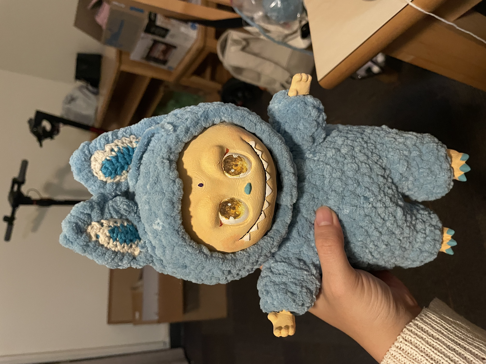
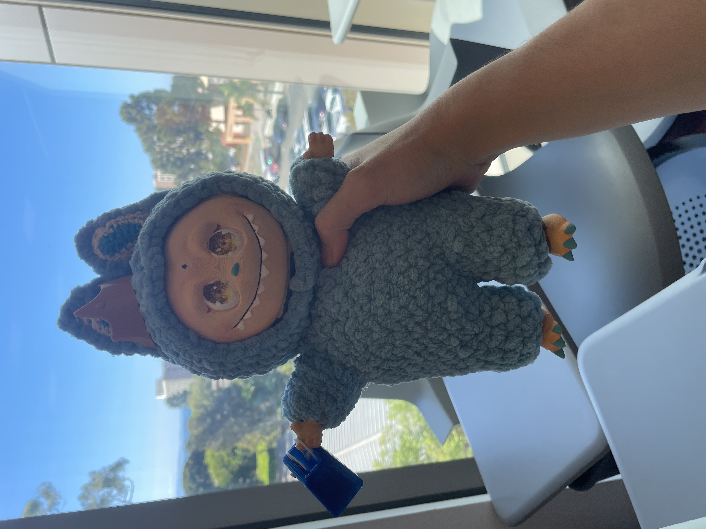

Inspired by my professor's fixation on Labubus, this project reimagines the popular Labubu plush by fusing digital fabrication with traditional craft. This process involved designing and 3D-printing its face and the supports for its limbs, coordinating with the plush, hand-crafted exterior. Ultimately, this work explores the intersection of computer-aided and machine craft with handmade artistry, considering how various materials and tools can work together to fabricate an intricate, tactile object.

